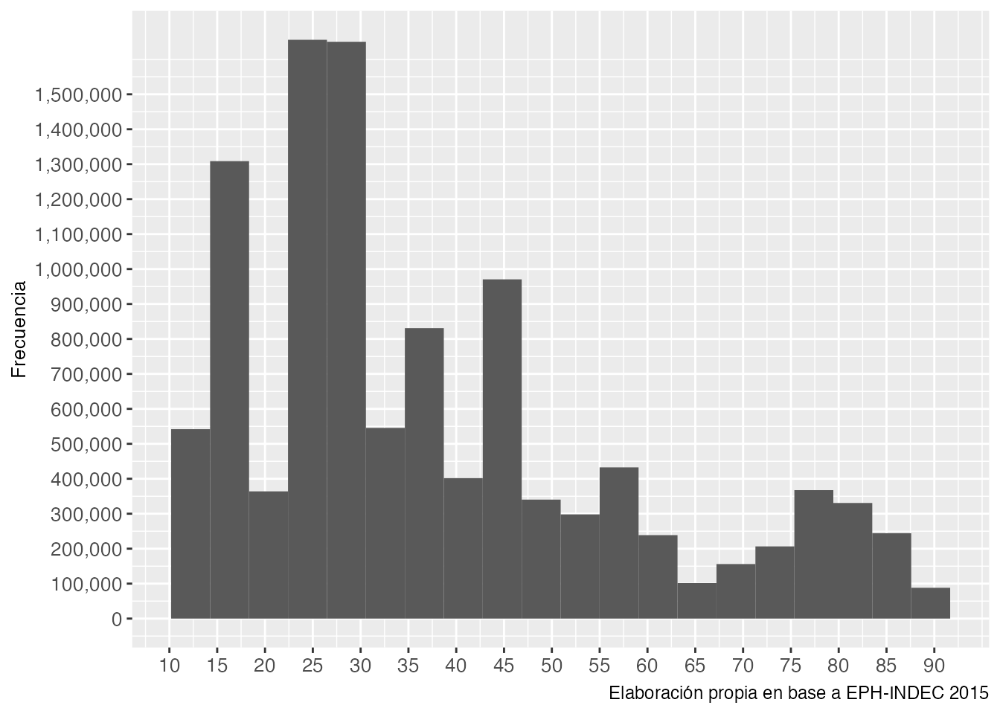

Paquetes que utilizaremos en este subcapítulo:
library(tidyverse)
library(occupar)
library(scales)En este apartado aprenderemos otra forma de operacionalizar esquemas de clasificación social a través de R. Para ello utilizaremos el paquete occupar, que permite, entre sus distintas funciones:
Convertir diferentes versiones de la CIUO 12 (68, 88, 08).
Creación de esquemas de clasificación (ISEI, SIOPS, EGP, ESeC) a partir de la CIUO.
Las ventajas de la utilización de este tipo de operacionalización es que podemos ahorrarnos una cantidad importante de tiempo, ya que no tendremos que invertirlo en escribir líneas y líneas de código. Al mismo tiempo, como veremos, nos permitirá la creación de al menos dos esquemas que son internacionalmente utilizados. Como desventaja, dependemos de la interpretación que los autores del paquete hicieron del proceso de operacionalización. Recordemos que operacionalizar implica decisiones teórico-metodológicas en la selección de variables y la combinación de categorías para la construcción de nuevas categorías (en este caso estratos y clases). Es decir, no podremos fácilmente modificar la propuesta de operacionalización ni adaptarla a nuestros objetivos e intereses.
Por ejemplo, el paquete no operacionaliza en forma correcta el esquema EGP, ya que asigna en forma errónea a los casos en algunas posiciones de clase. En el caso que se quiera utilizar dicho esquema, es recomendable recurrir a esquema ESeC, utilizado oficialmente en Europa, y que está basado en el EGP.
El paquete occupar esta basado en el proyecto implementado por Harry Ganzeboom de estandarización y armonización de medidas de posición de clase y estratificación 13. El mismo también se encuentra disponible para ser utilizado con SPSS. A continuación vamos a explorar como operacionalizar la escala ISEI utilizando dicho paquete.
Para instalar el paquete occupar es necesario tener instalado el paquete devtools. A continuación dejamos los pasos de instalación:
install.packages("devtools")
devtools::install_github("DiogoFerrari/occupar", dependencies=F)Recordemos que la escala ISEI no es un esquema discreto de clases sociales, sino que esta basado en un enfoque gradacional, en donde a cada ocupación se le otorga un puntaje, estandarizado internacionalmente, considerando como factores a la edad, la educación y la ocupación.
Utilizaremos la misma base que venimos explorando: la EPH del segundo trimestre de 2015 con el agregado de la ocupación codificada en la CIUO-08. La función es relativamente sencilla, se llama isco08toISEI08 y sólo debemos señalarle donde se encuentra la variable CIUO. A continuación solicitaremos un resumen de las principales medidas de tendencia central y de posición.
eph_ind_215$isei <- isco08toISEI08(eph_ind_215$PP04D_CIUO)
summary(eph_ind_215$isei) Min. 1st Qu. Median Mean 3rd Qu. Max. NA's
11.56 22.77 30.78 37.78 49.30 88.96 35722 eph_ind_215 %>%
select(PP04D_CIUO, isei) %>% #selecciono las variables de ocupación
filter(!is.na(isei)) %>% #filtro los casos con valores perdidos
head(n = 10)# A tibble: 10 × 2
PP04D_CIUO isei
<fct> <dbl>
1 7233 31.7
2 9112 14.2
3 7411 36.4
4 8331 26.8
5 7231 30.8
6 2262 81.1
7 9214 11.7
8 5322 21.6
9 7522 25.2
10 5223 28.5La ocupación peor posicionada es la que presenta un valor de 11,56, mientras que la mejor posicionada 88,96. La ocupación que divide a la muestra en dos (mediana) tiene un valor de 30,78 y el promedio es 35,78.
Por otro lado, pedimos también que nos muestren algunas correspondencias entre los valores de la codificación en CIUO y los puntajes del ISEI. Claramente los valores más bajos del ISEI, se corresponden con valores más bajos de la CIUO:
eph_ind_215 %>%
ggplot(aes(x = isei, weight = PONDERA)) +
geom_histogram(bins = 20)+
labs(y = "Frecuencia",
caption = "Elaboración propia en base a EPH-INDEC 2015") +
theme(plot.caption = element_text(size = 9),
axis.title.x = element_blank(),
axis.title.y = element_text(size = 10),
axis.text.x = element_text(size = 10),
axis.text.y = element_text(size = 10)) +
scale_x_continuous(breaks=seq(10, 90, 5)) +
scale_y_continuous(labels = scales::comma, breaks = seq(0, 1500000, 100000))Gráfico 5.2: Histograma de frecuencias la escala ISEI
El histograma nos muestra donde se concentran las personas según sus ocupaciones. De esta forma, la mayor parte de la población se encuentra entre el puntaje 15 y 43 de la escala. Por el contrario, las ocupaciones mejores puntadas tienen una menor proporción de personas.
ISCO en inglés↩︎